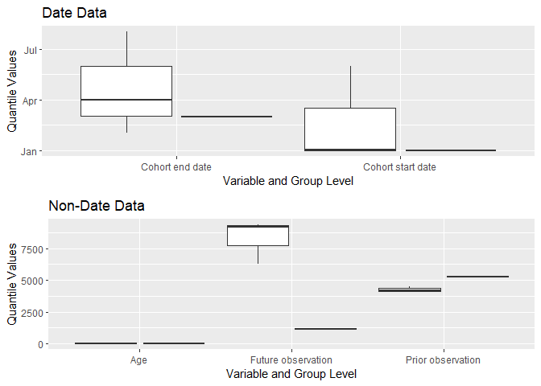

Package overview
CohortCharacteristics contains functions for summarising characteristics of cohorts of patients identified in an OMOP CDM dataset. Once a cohort table has been created, CohortCharacteristics provides a number of functions to help provide a summary of the characteristics of the individuals within the cohort.
Package installation
You can install the latest version of CohortCharacteristics like so:
install.packages("remotes")
remotes::install_github("darwin-eu-dev/CohortCharacteristics")Example usage
The CohortCharacteristics package is designed to work with data in the OMOP CDM format, so our first step is to create a reference to the data using the CDMConnector package. For this example we will work with the example Eunomia dataset.
cdm <- mockPatientProfiles(patient_size = 1000, drug_exposure_size = 1000)
cdmWe can see that in this example data we have a cohort table called cohort1.
cdm$cohort1
#> # Source: table<main.cohort1> [4 x 4]
#> # Database: DuckDB v0.9.2 [eburn@Windows 10 x64:R 4.2.1/:memory:]
#> cohort_definition_id subject_id cohort_start_date cohort_end_date
#> <dbl> <dbl> <date> <date>
#> 1 1 1 2020-01-01 2020-04-01
#> 2 1 1 2020-06-01 2020-08-01
#> 3 1 2 2020-01-02 2020-02-02
#> 4 2 3 2020-01-01 2020-03-01With one line of code from CohortCharacteristics we can generate summary statistics on this cohort.
cohort1_characteristics <- summariseCharacteristics(cdm$cohort1)
cohort1_characteristics |>
glimpse()
#> Rows: 90
#> Columns: 16
#> $ result_id <int> 1, 1, 1, 1, 1, 1, 1, 1, 1, 1, 1, 1, 1, 1, 1, 1, 1, 1,…
#> $ cdm_name <chr> "PP_MOCK", "PP_MOCK", "PP_MOCK", "PP_MOCK", "PP_MOCK"…
#> $ result_type <chr> "summarised_characteristics", "summarised_characteris…
#> $ package_name <chr> "PatientProfiles", "PatientProfiles", "PatientProfile…
#> $ package_version <chr> "0.8.0", "0.8.0", "0.8.0", "0.8.0", "0.8.0", "0.8.0",…
#> $ group_name <chr> "cohort_name", "cohort_name", "cohort_name", "cohort_…
#> $ group_level <chr> "cohort_1", "cohort_2", "cohort_1", "cohort_2", "coho…
#> $ strata_name <chr> "overall", "overall", "overall", "overall", "overall"…
#> $ strata_level <chr> "overall", "overall", "overall", "overall", "overall"…
#> $ variable_name <chr> "Number records", "Number records", "Number subjects"…
#> $ variable_level <chr> NA, NA, NA, NA, NA, NA, NA, NA, NA, NA, NA, NA, NA, N…
#> $ estimate_name <chr> "count", "count", "count", "count", "min", "min", "q0…
#> $ estimate_type <chr> "integer", "integer", "integer", "integer", "date", "…
#> $ estimate_value <chr> "3", "1", "2", "1", "2020-01-01", "2020-01-01", "2020…
#> $ additional_name <chr> "overall", "overall", "overall", "overall", "overall"…
#> $ additional_level <chr> "overall", "overall", "overall", "overall", "overall"…And with another line we can create a table of these results.
tableCharacteristics(cohort1_characteristics)| CDM name | Variable name | Variable level | Estimate name | Cohort name | |
|---|---|---|---|---|---|
| Cohort 1 | Cohort 2 | ||||
| PP_MOCK | Number records | - | N | <5 | <5 |
| Number subjects | - | N | <5 | <5 | |
| Cohort start date | - | Median [Q25 - Q75] | 2020-01-02 [2020-01-01 - 2020-03-17] | 2020-01-01 [2020-01-01 - 2020-01-01] | |
| [Q05 - Q95] | [2020-01-01 - 2020-05-17] | [2020-01-01 - 2020-01-01] | |||
| Range | 2020-01-01 to 2020-06-01 | 2020-01-01 to 2020-01-01 | |||
| Cohort end date | - | Median [Q25 - Q75] | 2020-04-01 [2020-03-03 - 2020-06-01] | 2020-03-01 [2020-03-01 - 2020-03-01] | |
| [Q05 - Q95] | [2020-02-08 - 2020-07-20] | [2020-03-01 - 2020-03-01] | |||
| Range | 2020-02-02 to 2020-08-01 | 2020-03-01 to 2020-03-01 | |||
| Age | - | Median [Q25 - Q75] | 22.00 [22.00 - 47.50] | 21.00 [21.00 - 21.00] | |
| [Q05 - Q95] | [22.00 - 67.90] | [21.00 - 21.00] | |||
| Mean (SD) | 39.00 (29.44) | 21.00 (<5) | |||
| Range | 22.00 to 73.00 | 21.00 to 21.00 | |||
| Sex | Female | N (%) | <5 (<5%) | - | |
| Male | N (%) | - | <5 (<5%) | ||
| Prior observation | - | Median [Q25 - Q75] | 4,209.00 [4,133.00 - 4,347.50] | 5,267.00 [5,267.00 - 5,267.00] | |
| [Q05 - Q95] | [4,072.20 - 4,458.30] | [5,267.00 - 5,267.00] | |||
| Mean (SD) | 4,250.67 (217.51) | 5,267.00 (<5) | |||
| Range | 4,057.00 to 4,486.00 | 5,267.00 to 5,267.00 | |||
| Future observation | - | Median [Q25 - Q75] | 9,196.00 [7,746.00 - 9,272.00] | 1,121.00 [1,121.00 - 1,121.00] | |
| [Q05 - Q95] | [6,586.00 - 9,332.80] | [1,121.00 - 1,121.00] | |||
| Mean (SD) | 8,280.00 (1,719.87) | 1,121.00 (<5) | |||
| Range | 6,296.00 to 9,348.00 | 1,121.00 to 1,121.00 | |||
With one more we can create a plot. For example here we create a set of box-plots.
plotCharacteristics(cohort1_characteristics, plotStyle = "boxplot")
CohortCharacteristics provides a number of other functions to help summarise cohort tables. These include summaries of cohort overlaps and timings between cohort entries, intersections with other cohort tables or tables containing clinical data, as well as a broader large scale characterisation of all data held on the individuals across the different tables of the OMOP CDM. These additional functionalities are summarised in the package vignettes.